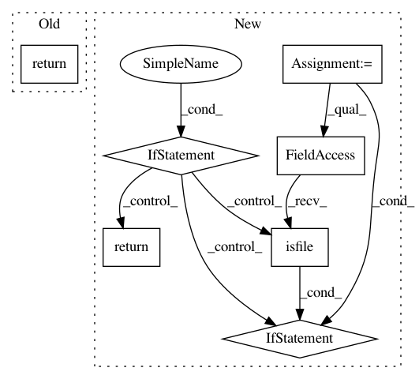

3c5e62d47eeded341b41cbe769f3e29b7b6f1614,homeassistant/components/recorder/migration.py,,migrate_schema,#Any#,9
Before Change
current_version = getattr(res, "schema_version", None)
if current_version == SCHEMA_VERSION:
return
_LOGGER.debug("Database requires upgrade. Schema version: %s",
current_version)
After Change
SchemaChanges.change_id.desc()).first()
current_version = getattr(res, "schema_version", None)
if current_version == SCHEMA_VERSION:
// Clean up if old migration left file
if os.path.isfile(progress_path):
_LOGGER.warning("Found existing migration file, cleaning up")
os.remove(instance.hass.config.path(PROGRESS_FILE))
return
with open(progress_path, "w"):
pass
_LOGGER.warning("Database requires upgrade. Schema version: %s",
In pattern: SUPERPATTERN
Frequency: 3
Non-data size: 7
Instances
Project Name: home-assistant/home-assistant
Commit Name: 3c5e62d47eeded341b41cbe769f3e29b7b6f1614
Time: 2018-08-19
Author: paulus@paulusschoutsen.nl
File Name: homeassistant/components/recorder/migration.py
Class Name:
Method Name: migrate_schema
Project Name: vatlab/SoS
Commit Name: 0eca6cc07bd848239f2b82e62c69b1152e8c36b8
Time: 2016-09-20
Author: ben.bog@gmail.com
File Name: pysos/signature.py
Class Name: executable
Method Name: exists
Project Name: home-assistant/home-assistant
Commit Name: 9e1fa7ef42cbad0f2fe36e51651a6f1d00d31dec
Time: 2018-08-19
Author: paulus@paulusschoutsen.nl
File Name: homeassistant/components/recorder/migration.py
Class Name:
Method Name: migrate_schema